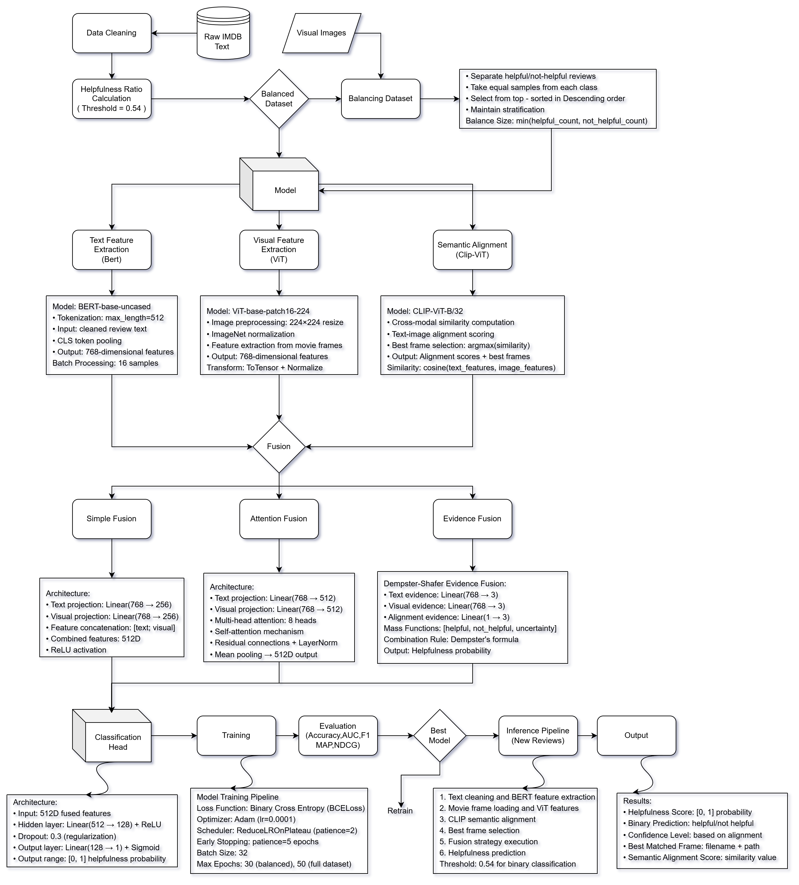

1. The Semantic Gap in Film Critique
If you feed this Interstellar review into a standard Natural Language Processing (NLP) model, it registers the positive sentiment but faces a profound semantic gap when visual context is crucial[cite: 28]. The reviewer references a specific cinematic frame entirely absent from the text. [cite_start]In Recommender Systems (RS), predicting review helpfulness is critical[cite: 27]. [cite_start]However, relying solely on user-voted helpfulness introduces noise and bias, often overlooking high-quality reviews due to low visibility[cite: 29]. [cite_start]While multimodal models like UNITER, ViLBERT, and MCR exist, they suffer from a fatal flaw in high-context domains: they assume inherent visual-text relevance[cite: 35, 36, 37]. If the review discusses a specific "wide shot," but the model is fed a generic movie poster, the deterministic fusion process generates noise rather than actionable insight.
2. The Cinematic Corpus & Dataset Formulation
Before building the deep learning architecture, we needed a mathematically sound, cross-genre dataset. [cite_start]We engineered a massive corpus by scraping and cleaning over 40,000 IMDb user reviews, retaining only those with rich semantic content[cite: 105]. [cite_start]To provide visual grounding, we extracted approximately 24,000 distinct keyframes from the source material[cite: 106].
[cite_start]To ensure our model's robustness, we curated a dataset spanning 9 highly diverse films across multiple genres[cite: 109, 206]. [cite_start]The corpus includes abstract, visually dense films like Interstellar, The Return of the King, and The Fellowship of the Ring, alongside dialogue-heavy dramas such as The Godfather and The Shawshank Redemption, and action-oriented features including The Dark Knight, Batman Begins, The Two Towers, and Inception[cite: 109, 206].
The target variable—Review Helpfulness—is traditionally represented as a ratio of user votes. We transformed this continuous ratio into a rigorous binary classification task:
We empirically selected a hard threshold of $0.54$[cite: 117]. [cite_start]This specific value was chosen after validating multiple thresholds; it serves as the optimal mathematical point to balance class distribution while preserving dataset size without introducing severe label noise[cite: 118, 120].
3. Dynamic Semantic Grounding (CLIP)
[cite_start]To explicitly solve the visual-textual semantic misalignment problem, we engineered a dynamic grounding module utilizing Contrastive Language-Image Pre-training (CLIP)[cite: 76, 78]. Instead of hard-coding image-text pairs, our framework maps both the user's abstract review and all candidate movie keyframes into a shared, high-dimensional latent space.
For a given review $r_i$ and a set of candidate frames $\{f_1, f_2, ..., f_k\}$, we compute the cosine similarity between their respective CLIP embeddings ($e_r$ and $e_f$). [cite_start]The model autonomously searches for the exact cinematic moment the reviewer is referencing by selecting the frame $f^*$ that maximizes this alignment score[cite: 138, 147]:
$$ f^* = \arg\max_{f} \cos(e_r, e_f) $$ [cite_start]
Because CLIP relies on pseudo-labeling, which inherently introduces some labeling noise [cite: 146][cite_start], we executed a rigorous manual validation on a subset of 500 review-image pairs[cite: 145]. [cite_start]This allowed us to adjust the similarity threshold, ensuring that the dynamic frame selection explicitly mitigated noise before entering the downstream fusion layers[cite: 145].
import torch
import torch.nn.functional as F
def get_optimal_frame(review_emb, frame_embs):
# Normalize embeddings for cosine similarity computation
review_emb = F.normalize(review_emb, p=2, dim=-1)
frame_embs = F.normalize(frame_embs, p=2, dim=-1)
# Compute similarity scores across all candidate frames: shape (1, N)
similarity_scores = torch.matmul(review_emb, frame_embs.T)
# Select the frame f* that strictly maximizes semantic alignment
best_frame_idx = torch.argmax(similarity_scores, dim=-1)
alignment_score = similarity_scores[0, best_frame_idx]
return best_frame_idx, alignment_score
4. Dual-Stream Architecture & Multi-Task Learning
Once the framework pairs the review $r_i$ with its optimal frame $f^*$, it passes them into a robust dual-stream feature extraction pipeline. [cite_start]To capture deep contextual semantics from the review text, we utilize a Bidirectional Encoder Representations from Transformers (BERT) module, generating a dense representation $h_{text} \in \mathbb{R}^{768}$[cite: 121, 122, 123]. [cite_start]Parallel to this, we employ a Vision Transformer (ViT) to extract complex scene representations from the movie still, producing visual features $h_{visual} \in \mathbb{R}^{768}$[cite: 131, 132, 133].

Fig 1: The full multimodal pipeline. Text reviews are encoded via BERT, keyframes via ViT, guided by the scalar Alignment Score ($s$) from CLIP.
Our model is optimized via a multi-task learning approach. [cite_start]Two task-specific heads—a Helpfulness Predictor (binary classification) and an Alignment Classifier—share the fused representation[cite: 178, 179, 180, 181]. We train these heads jointly using a combined loss formulation:
We train the models utilizing the Adam optimizer (learning rate 3e-5, batch size 16) over 10 epochs, triggering early stopping based on NDCG and F1 scores on a 20% validation set to prevent overfitting[cite: 185, 186]. [cite_start]Dropout and layer normalization are applied post-fusion for stringent regularization[cite: 187].
5. Uncertainty Management: Dempster-Shafer Evidential Fusion
[cite_start]The most profound limitation of modern multimodal models is their over-reliance on deterministic fusion strategies (e.g., direct concatenation or element-wise addition)[cite: 73, 156]. These shallow methods treat all modalities equally. [cite_start]However, in user-generated content, visuals may be highly symbolic, and text is frequently hyperbolic[cite: 74]. [cite_start]When textual and visual signals violently contradict one another, deterministic models risk overfitting to one modality, forcing overconfident and inaccurate predictions[cite: 75].
[cite_start]To move beyond deterministic fusion, we engineered an uncertainty-aware framework grounded in Dempster-Shafer theory[cite: 80]. [cite_start]We mathematically interpret the extracted BERT and ViT embeddings as independent "belief masses" ($m_1$ and $m_2$)[cite: 159, 165]. By doing so, we explicitly compute the conflict mass between the modalities.
$$ m_{fused} = \frac{m_1 \cdot m_2}{1 - K} $$
Intuitively, when the textual and visual features agree, the mathematical belief is structurally reinforced. However, when they conflict (e.g., sarcastic text paired with a solemn image), the system quantifies this uncertainty via $K$. [cite_start]By dividing by $(1-K)$, the framework adaptively weights the evidence, resolving modality conflicts and yielding highly robust predictions in noisy conditions[cite: 173, 175].
6. Empirical Results & Training Dynamics
[cite_start]To deeply understand the optimization landscape and model behavior, we analyzed the training dynamics on the highly complex Interstellar dataset[cite: 213]. The visualizations below break down convergence stability, validation metrics, and cross-genre robustness.
Optimization & Convergence Stability
[cite_start]Figure 2(a) illustrates the epoch-wise training loss[cite: 214]. Modern multimodal models often suffer from unstable gradients during early epochs due to modality conflict. [cite_start]As seen in Vis 1, evidential fusion demonstrates significantly smoother convergence and lower loss variance compared to the erratic trends observed in attention-based fusion[cite: 215]. [cite_start]By mathematically discounting conflicting modality signals via the Dempster-Shafer conflict mass ($K$), the network stabilizes efficiently around epoch 10[cite: 216].

Validation Generalization (AUC & F1)
While attention-based models show rapid early memorization, they tend to oscillate heavily on validation sets containing ambiguous user reviews. Vis 2 tracks the validation AUC over training epochs. [cite_start]Evidential fusion maintains superior AUC scores, reflecting strong generalization[cite: 216]. The smooth asymptote proves that our fusion strategy genuinely learns the semantic alignment threshold required for visually complex test data, rather than overfitting to the text modality.

Comprehensive Ranking Benchmarks
[cite_start]Figure 2(b) summarizes the final performance using key ranking metrics[cite: 218]. [cite_start]Vis 3 clearly illustrates that evidential fusion delivers the most balanced and consistent results across these metrics, affirming its suitability for robust review ranking[cite: 219]. [cite_start]It achieves a state-of-the-art Mean Average Precision (MAP) of 0.87 and a Normalized Discounted Cumulative Gain (NDCG) of 0.97[cite: 16].
 [cite_start]
[cite_start]Cross-Genre Robustness & Modality Bias
The true test of a multimodal architecture is its adaptability across varying data distributions. Vis 4 breaks down performance across diverse film genres. [cite_start]Evidential fusion performs consistently well, especially in visually complex, abstract films like Interstellar and Fellowship of the Ring, outperforming baselines (e.g., F1: 0.80, MAP: 0.90) due to its strength in managing modality uncertainty[cite: 203, 204, 205]. [cite_start]In contrast, text-heavy narratives like The Godfather favored attention fusion, while clear action films like The Dark Knight favored simple concatenation[cite: 210, 212].

7. Ablation & Statistical Significance
To ensure empirical rigor, we conducted comprehensive ablation studies. [cite_start]Removing the CLIP-based semantic alignment completely ungrounded the visual encoder, reducing the F1 score by 4%[cite: 228, 229].
Furthermore, to simulate real-world data corruption, we conducted leave-one-out validation. [cite_start]With 20% of the visual data intentionally dropped, evidential fusion's performance declined by a mere 2.7%, versus a steep 5.2% crash for baseline multimodal methods[cite: 225, 226]. [cite_start]Average p-values from paired t-tests confirmed that evidential fusion's improvements are consistently statistically significant over attention fusion across F1 ($p = 0.032$) and MAP ($p = 0.019$)[cite: 230, 231].
8. Limitations & Future Horizons
[cite_start]Despite the system's promising performance across diverse genres, error analysis revealed that misclassified reviews often referenced abstract concepts or visuals not captured in our available, static keyframes[cite: 232]. [cite_start]For instance, a review praised "the mood in the opening scene," but the randomly sampled stills lacked the relevant imagery necessary to ground the model[cite: 233].
These failure cases point directly toward our future trajectory. [cite_start]To address this, future improvements will incorporate dynamic scene segmentation and temporal modeling (e.g., using 3D CNNs or Video-Swin Transformers) to better capture evolving visual cues referenced in reviews[cite: 249]. [cite_start]Additionally, we aim to extend the model to multilingual review datasets and incorporate reviewer-specific metadata—such as past activity or trustworthiness—to further improve generalization across platforms like IMDb and Rotten Tomatoes[cite: 250].
9. References & Further Reading
- CLIP (Semantic Alignment): Radford, A., et al. (2021). [cite_start]Learning Transferable Visual Models From Natural Language Supervision. In Proceedings of the International Conference on Machine Learning (ICML)[cite: 286].
- Evidential Fusion (Dempster-Shafer): Alzahem, A., et al. (2024). [cite_start]Feature fusion for improved classification: Combining Dempster-Shafer theory and multiple CNN architectures. arXiv preprint arXiv:2405.20230[cite: 278].
- BERT (Text Encoding): Devlin, J., et al. (2019). [cite_start]BERT: Pre-training of Deep Bidirectional Transformers for Language Understanding. In Proceedings of NAACL-HLT[cite: 289, 290].
- ViT (Visual Encoding): Dosovitskiy, A., et al. (2021). [cite_start]An Image is Worth 16x16 Words: Transformers for Image Recognition at Scale. In Proceedings of ICLR[cite: 287, 288].